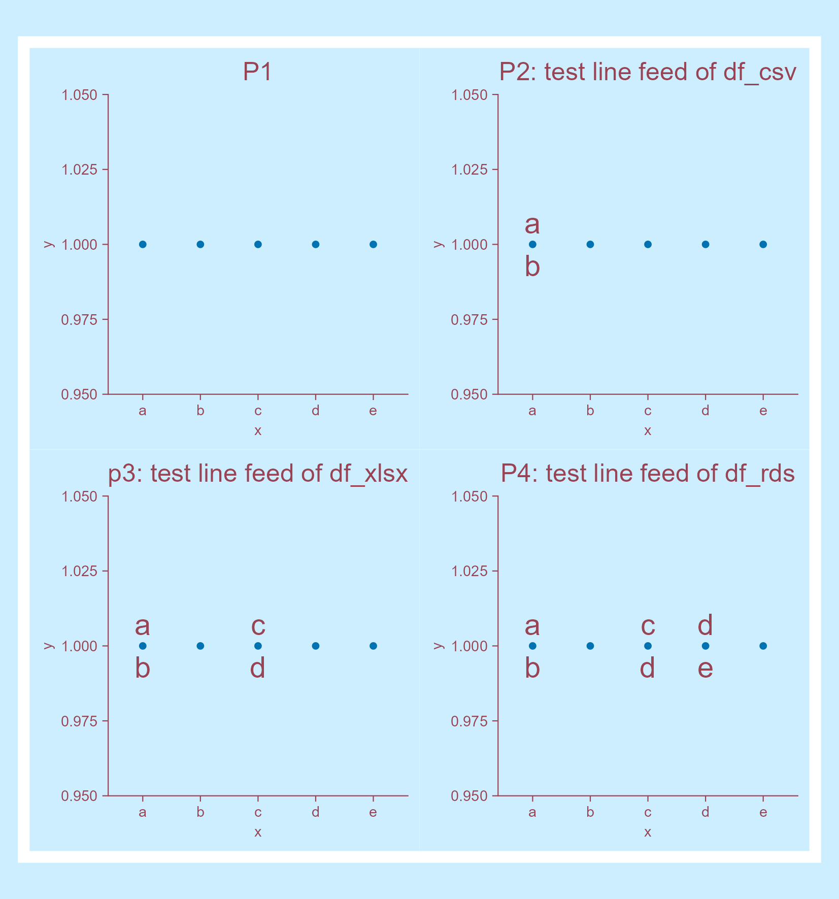

1. 先生成一个示例data frame
# Generate a tibble <- tibble:: tibble (x = letters[1 : 5 ],y = rep (1 , 5 ),labels = c ("a \n b" , "b \n c" , "c \n d" , "d \n e" , "e \n f" )# View df
# A tibble: 5 × 3
x y labels
<chr> <dbl> <chr>
1 a 1 "a\nb"
2 b 1 "b\nc"
3 c 1 "c\nd"
4 d 1 "d\ne"
5 e 1 "e\nf"
2. 将df分别存储为csv、txt、xlsx、和rds格式
# Save as csv |> :: write_csv (file = "raw_data/2026-04-26_line-feed.csv" )# Save as txt |> :: write_tsv ("raw_data/2026-04-26_line-feed.txt" )# Save as excel |> :: write_xlsx ("raw_data/2026-04-26_line-feed.xlsx" )# Save as rds |> :: write_rds ("raw_data/2026-04-26_line-feed.rds" )# View the saved files "raw_data/" |> :: dir_tree (regexp = "^raw_data/2026-04-26_line-feed" )
raw_data/
├── 2026-04-26_line-feed.csv
├── 2026-04-26_line-feed.rds
├── 2026-04-26_line-feed.txt
└── 2026-04-26_line-feed.xlsx
3. 读取存储的4个文件
# read csv file <- "raw_data/2026-04-26_line-feed.csv" |> :: read_csv (show_col_types = FALSE )# view
# A tibble: 5 × 3
x y labels
<chr> <dbl> <chr>
1 a 1 "a\nb"
2 b 1 "b\nc"
3 c 1 "c\nd"
4 d 1 "d\ne"
5 e 1 "e\nf"
# read txt file <- "raw_data/2026-04-26_line-feed.txt" |> :: read_tsv (show_col_types = FALSE )# view
# A tibble: 10 × 3
x y labels
<chr> <dbl> <chr>
1 a 1 a
2 b NA <NA>
3 b 1 b
4 c NA <NA>
5 c 1 c
6 d NA <NA>
7 d 1 d
8 e NA <NA>
9 e 1 e
10 f NA <NA>
# read xlsx file <- "raw_data/2026-04-26_line-feed.xlsx" |> :: read_xlsx ()# view
# A tibble: 5 × 3
x y labels
<chr> <dbl> <chr>
1 a 1 "a\nb"
2 b 1 "b\nc"
3 c 1 "c\nd"
4 d 1 "d\ne"
5 e 1 "e\nf"
# read rds file <- "raw_data/2026-04-26_line-feed.rds" |> :: read_rds ()# view
# A tibble: 5 × 3
x y labels
<chr> <dbl> <chr>
1 a 1 "a\nb"
2 b 1 "b\nc"
3 c 1 "c\nd"
4 d 1 "d\ne"
5 e 1 "e\nf"
看来若df中含有\n，则不能把df存储为tsv格式。
4. 测试换行符在plot的表现
|> library ()<- df |> tidyplot (x = x, y = y, paper = "#cceeff" , ink = "#994455" ) |> add_data_points () |> add_title (title = "P1" ) |> adjust_title (fontsize = 12 )<- p1 |> add_annotation_text (text = df_csv$ labels[1 ],x = "a" , y = 1 , fontsize = 14 ) |> adjust_title (title = "P2: test line feed of df_csv" )<- p2 |> add_annotation_text (text = df_xlsx$ labels[3 ],x = "c" , y = 1 , fontsize = 14 ) |> adjust_title (title = "p3: test line feed of df_xlsx" )<- p3 |> add_annotation_text (text = df_rds$ labels[4 ],x = "d" , y = 1 , fontsize = 14 ) |> adjust_title (title = "P4: test line feed of df_rds" ):: wrap_plots (p1, p2, p3, p4, ncol = 2 ) |> save_plot ("images/2026-04-26_line-feed.png" ,view_plot = FALSE , width = 140 , height = 150 )

换行符确实在plot中让换行了😁。